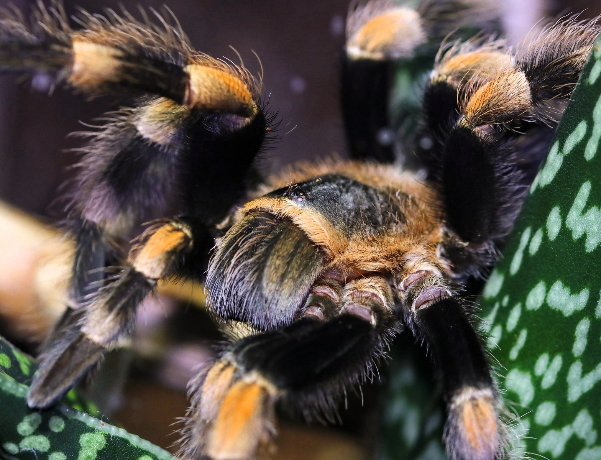

Bakhold og forsvar
Sabrina
Brachypelma hamoriiPå bildet ser du Sabrinas tydelige oransje bånd og hår på beina. Sabrina bruker et skjulested som et trygt utgangspunkt. På bakkroppen, som ikke vises tydelig her, har hun spesielle forsvarshår som kan frigjøres og forårsake irritasjon.
Legg merke tilOransje bånd, mørke bein og fine hår på beina
Hvorfor det hjelperForsvar uten at edderkoppen trenger å angripe
Tina spør: Hvorfor tror du et trygt skjulested er nyttig for en jeger som ofte venter på byttet?